| 日付 | 2014年1月13日（月） |
|---|---|
| 山域 | 房総 |
| メンバー | 家族（妻、長女・2歳、長男・0歳） |
| 山行形態 | 子連れ日帰り |
| アクセス | 車 |
| ルート (Map) | 坂田駐車場 (8:43) - (8:49) 登山口 - (9:48) 房の大山 (10:42) - (11:33) 坂田駐車場 |
1年ぶりに房総の山に行くことにする。
大山と名の付く山はたくさんあるが、
ここ房総の大山は他の大山と区別するために
「房の大山」と呼ばれている。
海岸沿いの駐車場に車を停める。標高0m。
今日は少し風が強いので海が荒れている。
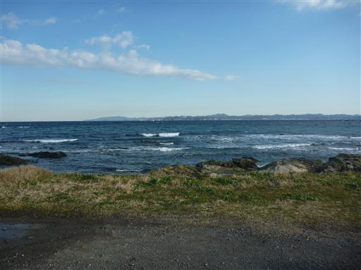
海鳥の数が非常に多い。
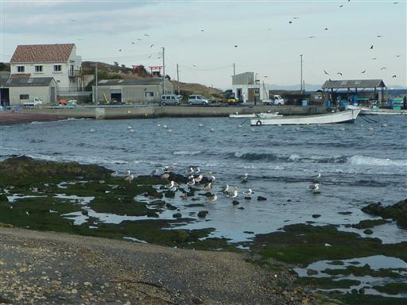
今回は初めて息子をベビーキャリアに乗せる。
娘は最初ぐずぐずと言っていたが、観念したのか歩き始める。
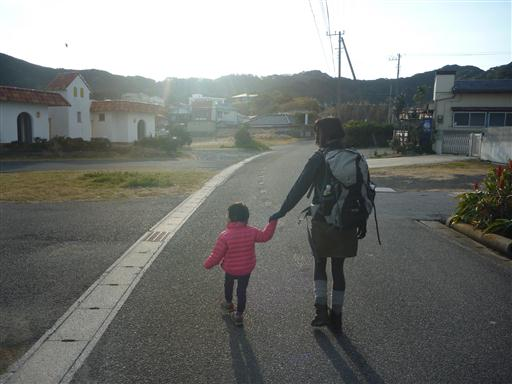
集落の中を歩いていくと、道は行き止まりになる。
そのすぐ手前の細い細い道を左手に入っていく。
小さな標識があるので迷うことはない。
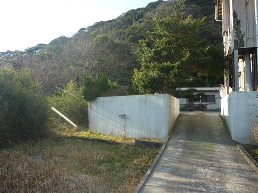
最初は竹藪の中を登っていく。
登山道が狭く、横になっている竹もあるので歩きにくい。
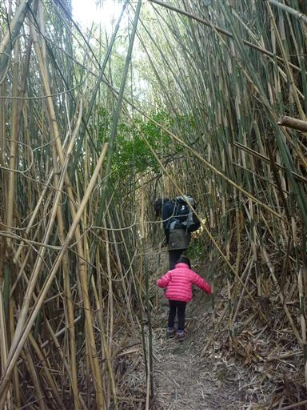
低い山だが傾斜は急で子供には歩きにくい道が続く。
手をつなぎながらゆっくりと登っていく。
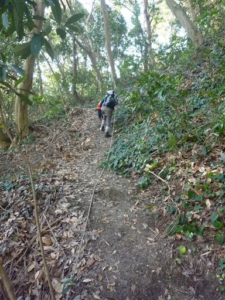
マテバシイの樹林帯が広がる。

房の大山山頂に到着。標高194m。
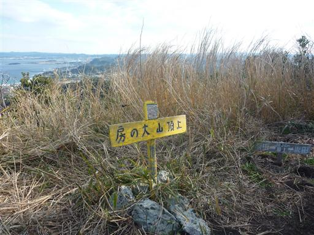
この山には一等三角点が埋められている。
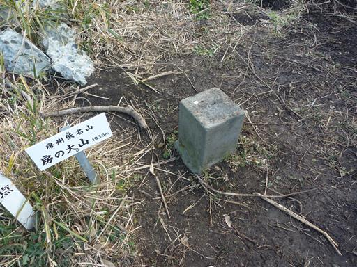
半島の先にある山のため、広範囲に海を望むことができる。
遠くに薄ら見えているのは伊豆大島だ。
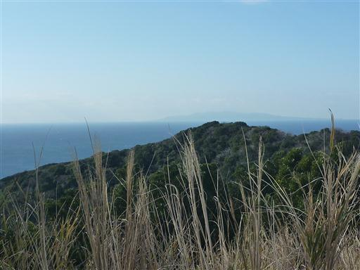
こちらは館山湾。
山頂は寒いので風が避けられる樹林帯の中に入って昼食をとる。
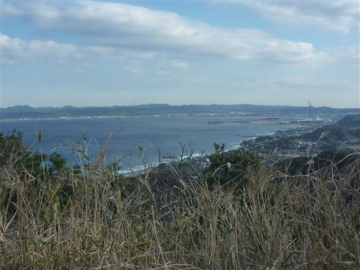
周回コースを歩こうと思っていたが、工事のため進入禁止になっている。
もう1つ別の道があったが、登山道がどこに通じているかよく分からなかったため
元来た道を引き返すことにする。
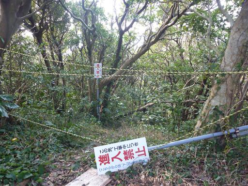
目を引く大きな木が立っている。枝を四方に伸ばしている。
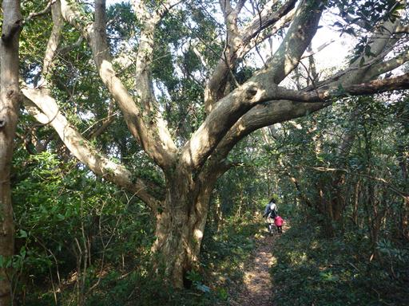
登りは快調だった娘も、下山は少しぐずぐずモード。
抱っこをせがむため少しだけ抱っこしてあげる。
重くてずっと抱っこは無理なため、すぐに下ろして歩かせる。

美しいシダの葉。
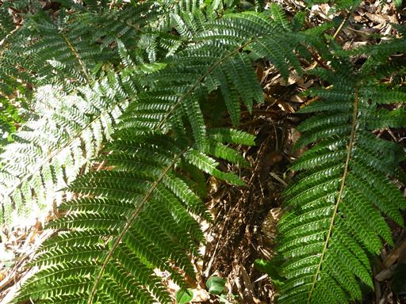
無事下山。
到着が早かったからか登りでは誰とも出会わなかったが、山頂や下りでは多くの人とすれ違った。
マイナーな山かと思ったら、案外と人気の山だった。
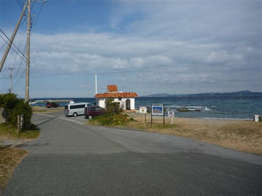